---
---
ApkaŁapka: niezależna książeczka zdrowia psa i kota (Android i iOS)
Książeczka zdrowia Twojego pupilaYour pet's health record book
Pełna historia, wszystkie powiadomienia i wyniki badań w jednym miejscu, zawsze pod ręką.The full history, every reminder and lab result in one place, always at hand.
★★★★★5,0 w Google Play · 4,9 w App Store5.0 on Google Play · 4.9 on the App Store
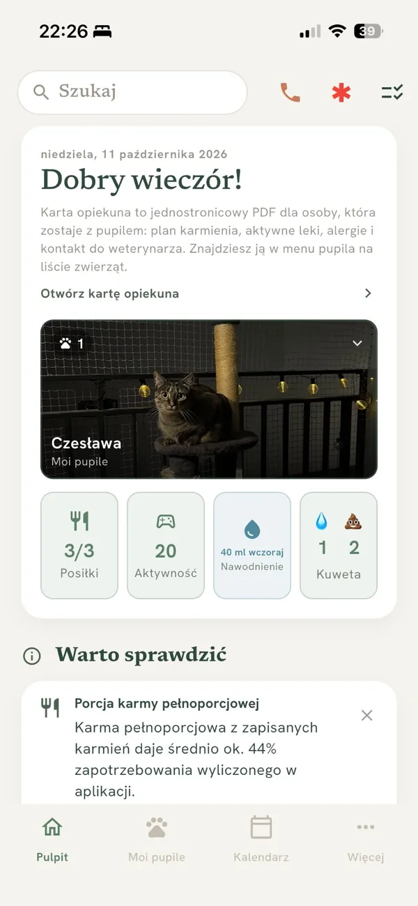
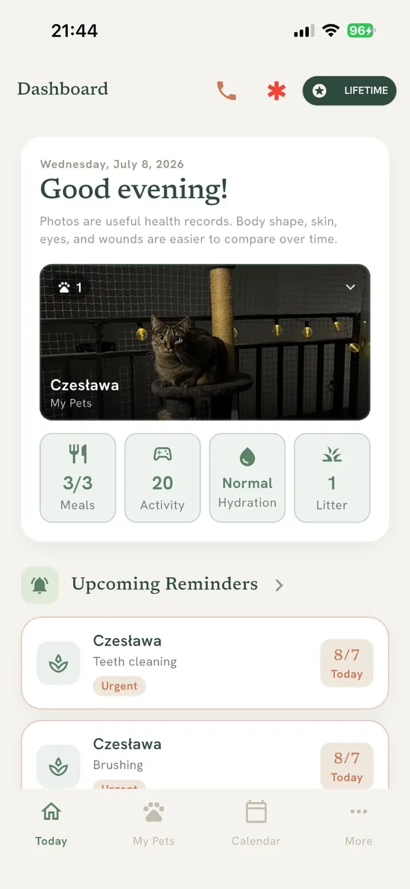
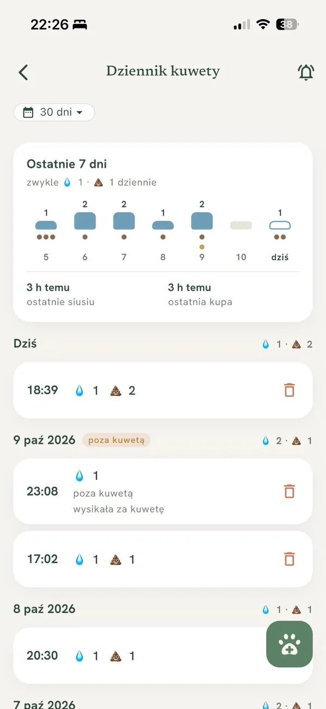
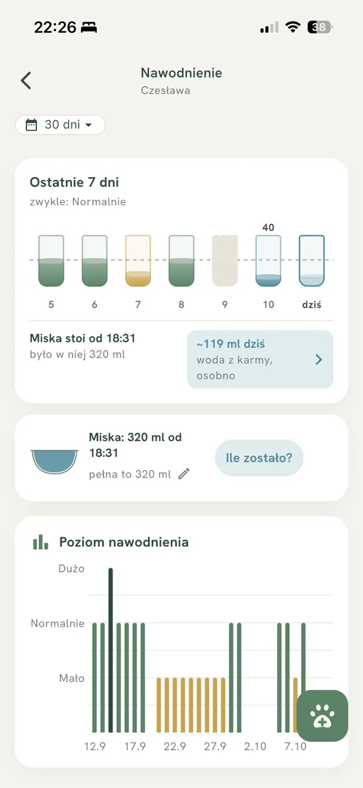
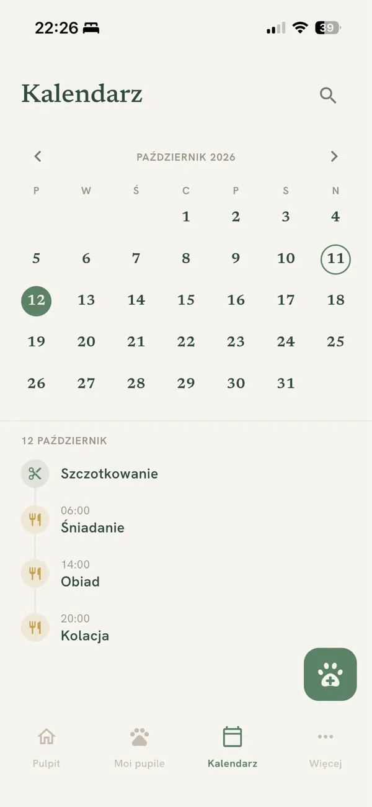
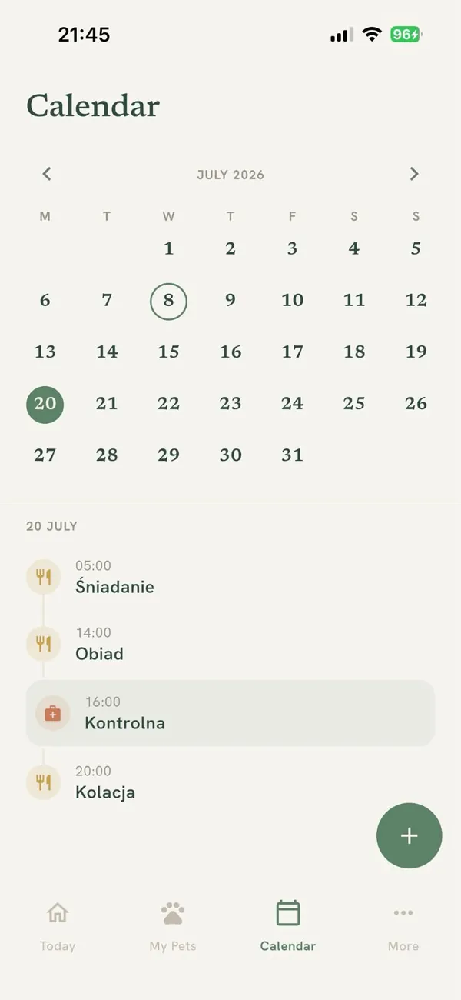
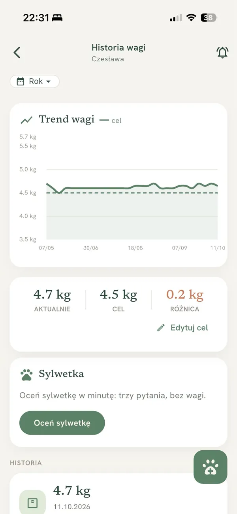
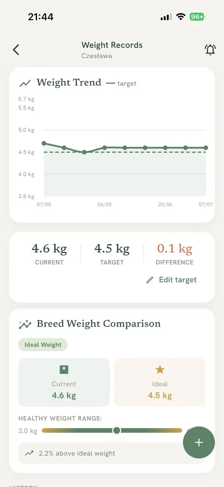
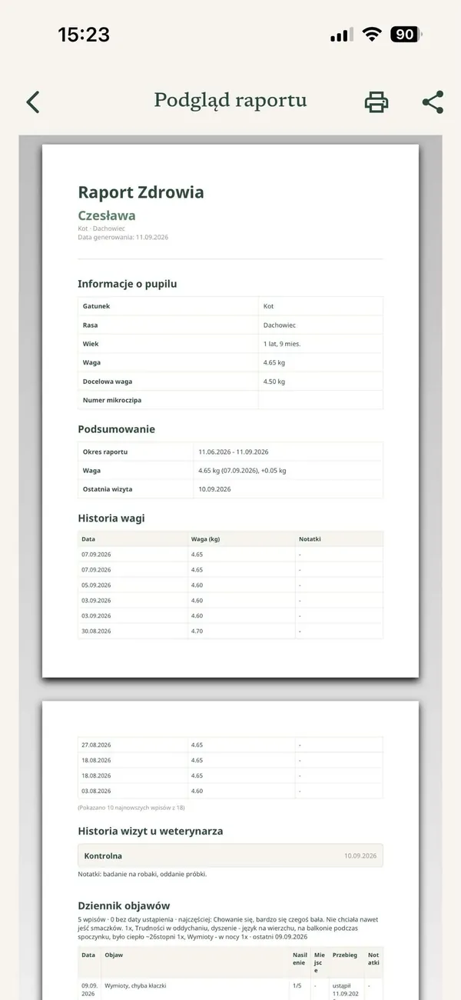
Pies i kotDogs and catsDziała bez internetuWorks offlineDarmowe konto w chmurzeFree cloud accountPo polsku i angielskuPolish & EnglishDane szyfrowane, RODOEncrypted, GDPR
Kiedy ApkaŁapka się przydajeWhen ApkaŁapka comes in handy
Pytania, które padają w domu i u weterynarza. Odpowiedź masz już w telefonie.Questions you hear at home and at the vet. The answer is already on your phone.
„Od kiedy kot więcej pije?”“Since when has the cat been drinking more?”
ApkaŁapka liczy normę Twojego pupila z ostatnich dwóch tygodni i oznacza dzień, w którym pił więcej niż zwykle. Na wizycie pokazujesz wykres, a nie wrażenie.ApkaŁapka works out your pet's own normal from the last two weeks and marks any day they drank more than usual. At the vet you show a chart, not a hunch.
„Na ile starczy karmy?”“How long will the food last?”
ApkaŁapka liczy każdą porcję, pokazuje, na ile dni jeszcze wystarczy karmy, i przypomina o zakupie, zanim zapas się skończy. Żwirek i leki liczy tak samo.ApkaŁapka counts every portion, shows how many days of food are left and reminds you to buy more before the stock runs out. Litter and meds work the same way.
„Czy kot dziś w ogóle korzystał z kuwety?”“Has the cat used the litter box at all today?”
Wpisujesz kuwetę przy sprzątaniu, a ApkaŁapka pokazuje, kiedy było ostatnie siusiu i ostatnia kupa. Z wpisów liczy normę Twojego kota i daje znać, gdy coś od niej odbiega: mniej siusiu niż zwykle, luźne stolce albo długa przerwa bez kupy.You log the litter box when you scoop, and ApkaŁapka shows when the last pee and the last poop were. From your entries it works out your cat's normal and lets you know when something drifts from it: fewer pees than usual, loose stools or a long gap without poop.
„A jak zmieniała się waga przez ostatni rok?”“And how has the weight changed over the past year?”
ApkaŁapka tworzy raport dla weterynarza ze wszystkim, o co lekarz pyta na wizycie: waga i jej zmiany, leki, szczepienia, odrobaczanie, objawy i wyniki badań. Okres wybierasz sam, od 3 miesięcy po całą historię.ApkaŁapka creates a vet report with everything the vet asks about: weight and how it changed, meds, vaccinations, deworming, symptoms and lab results. You choose the period, from 3 months to the full history.
Premium · pierwszy raport za darmoPremium · first report free
Co jest w środkuWhat's inside
Najedź na kafel, a telefon pokaże ten ekran.Hover a tile and the phone shows that screen.
Dotknij kafla, żeby zobaczyć ekran.Tap a tile to see the screen.
PulpitHome screen
Układasz go po swojemu. Na górze to, co sprawdzasz codziennie: posiłki, picie, kuweta, leki, waga, aktywność albo nastrój. Niżej skróty do czego chcesz: wizyty, szczepienia, odrobaczanie, pielęgnacja, wydatki, badania, temperatura, cykl rui i inne, w dowolnej kolejności.Set it up your way. Up top, what you check every day: meals, drinking, litter box, meds, weight, activity or mood. Below, shortcuts to anything you like: visits, vaccinations, deworming, grooming, expenses, lab results, temperature, heat cycle and more, in any order.
PrzypomnieniaReminders
Szczepienia, odrobaczanie, wizyty, leki, posiłki, pielęgnacja i ważenie. Sam ustawiasz, ile dni wcześniej, a z powiadomienia odhaczasz jednym dotknięciem.Vaccinations, deworming, vet visits, meds, meals, grooming and weigh-ins. You choose how many days ahead, and tick it off straight from the notification.
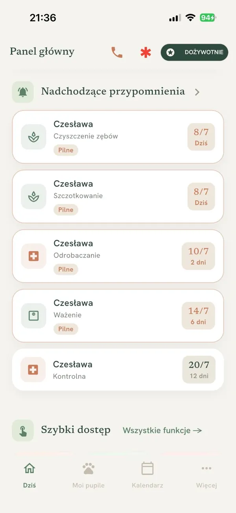
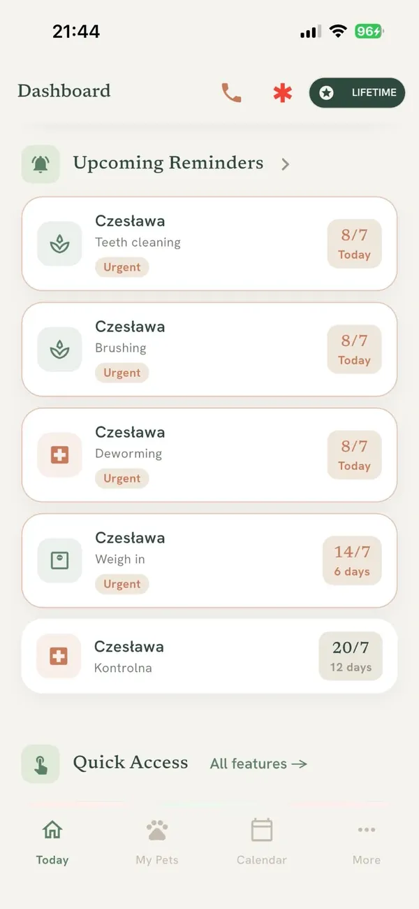
Kalendarz opiekiCare calendar
Miesiąc z zaznaczonymi wizytami, szczepieniami i odrobaczaniem. Dotykasz dnia i widzisz jego plan: karmienia, leki, pielęgnację, przy kilku pupilach dla wszystkich naraz.A month view with vet visits, vaccinations and deworming marked. Tap a day to see its plan: feedings, meds, grooming, for all your pets at once.
Planer posiłkówMeal planner
Liczy, ile kalorii dziennie potrzebuje pupil, i rozkłada je na posiłki w gramach Twojej karmy. Odhaczasz karmienie, a zapas karmy schodzi sam.Works out how many calories your pet needs a day and splits them into meals, in grams of your own food. Tick off a feeding and the food stock goes down by itself.
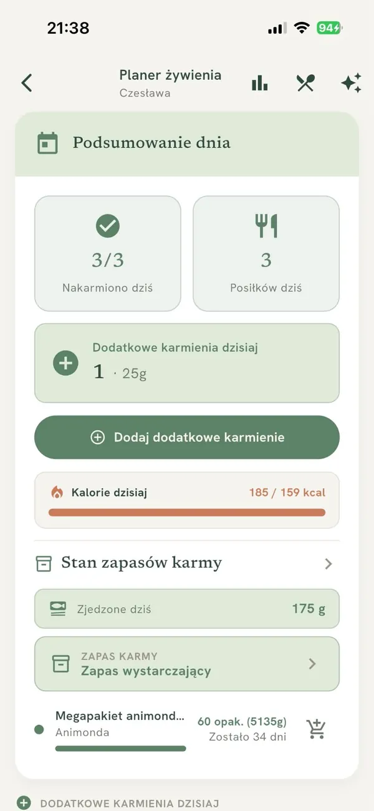
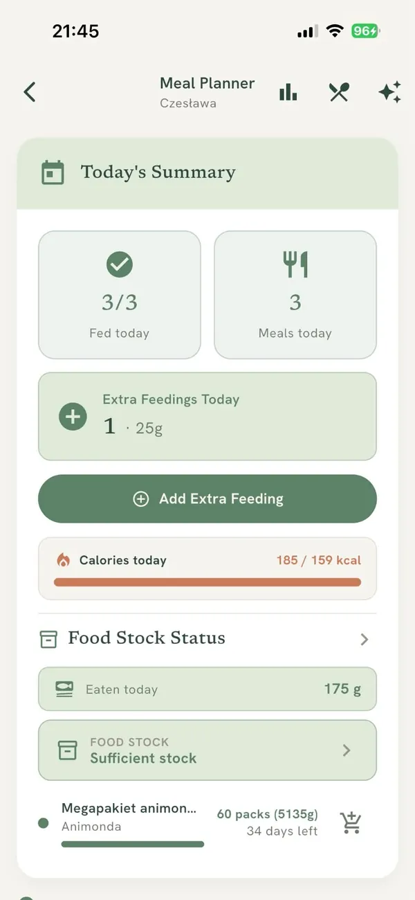
KuwetaLitter box
Zapisujesz, ile razy kot sikał i ile razy zrobił kupę, a gdy coś było nie tak, dopisujesz szczegóły. ApkaŁapka pokazuje cały tydzień i daje znać, gdy coś odbiega od normy Twojego kota.Log how many times your cat peed and pooped, and add details when something was off. ApkaŁapka shows the whole week and lets you know when something drifts from your cat's normal.
NawodnienieHydration
Zapisujesz, ile pupil pił: na oko albo dokładnie, w mililitrach z miski. ApkaŁapka porównuje to z jego zwykłym piciem i mówi, kiedy pije wyraźnie więcej albo mniej.Log how much your pet drank: by eye, or exactly in ml from the bowl. ApkaŁapka compares it with their usual drinking and tells you when they drink clearly more or less.
ZapasySupplies
Karma, leki, żwirek i wszystko, co kupujesz regularnie. Widzisz, na ile dni starczy, i dostajesz przypomnienie o zakupie z wyprzedzeniem.Food, meds, litter and anything else you buy regularly. See how many days each will last and get a reminder to restock in time.
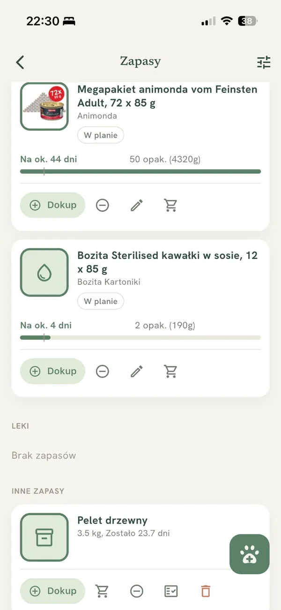
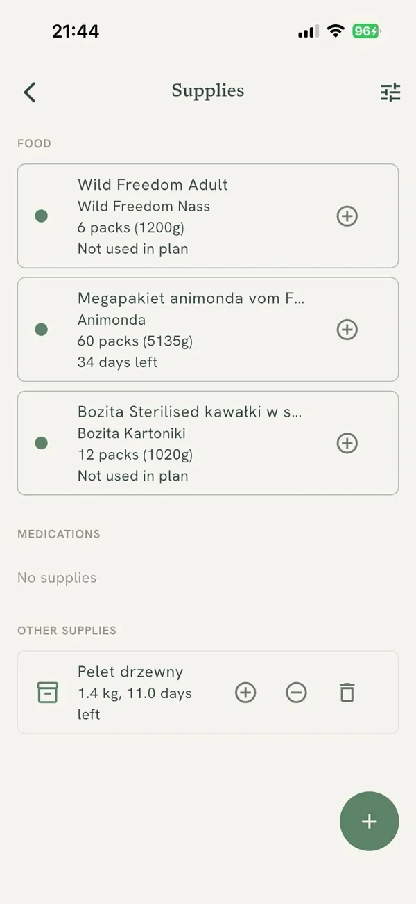
Waga i trendyWeight & trends
Wykres wagi z wagą docelową, ocena sylwetki w skali 1-9, a u pupili rasowych porównanie z wzorcem rasy.A weight chart with a target weight, a 1-9 body condition score and, for purebred pets, a comparison with the breed standard.
Premium
Wyniki badańLab results
Robisz zdjęcie kartki z laboratorium, a ApkaŁapka odczytuje wyniki. Każdy parametr widzisz na tle normy dla psa albo kota i na wykresie zmian od poprzednich badań.Snap the lab printout and ApkaŁapka reads the results. Each value is shown against the normal range for dogs or cats, with a chart of how it changed since earlier tests.
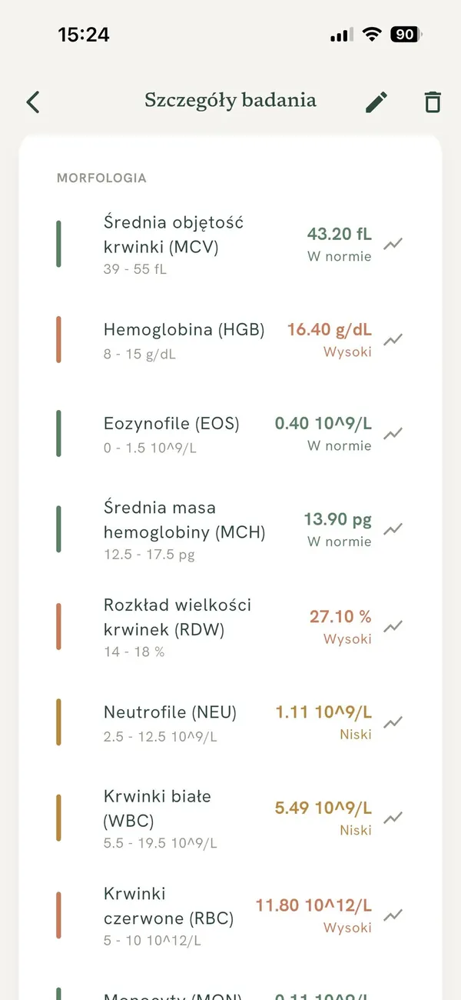
Premium
Analiza zdrowiaHealth analysis
Jeden ekran, który mówi, czym się zająć: zaległe szczepienie, kończący się lek, nagła zmiana wagi. Do tego analiza żywienia: kalorie, przysmaki, regularność posiłków i to, czy dieta jest pełnowartościowa. Pod spodem cała historia zdrowia pupila na jednej osi czasu.One screen that tells you what needs attention: an overdue vaccination, meds running low, a sudden weight change. Plus a nutrition analysis: calories, treats, meal regularity and whether the diet is complete. Below, your pet's whole health history on one timeline.
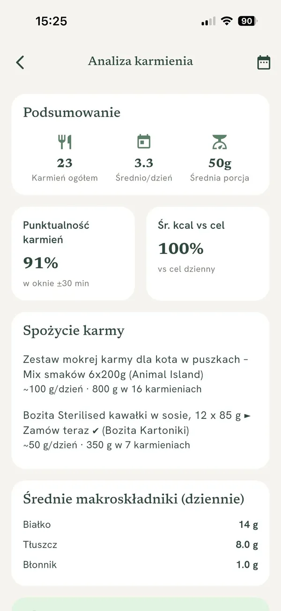
Premium
Cardio Check
Liczysz oddechy pupila w spoczynku, dotykając ekranu przez 30 sekund. ApkaŁapka podaje tempo na minutę, pokazuje, czy mieści się w normie, i zapisuje historię pomiarów.Count your pet's breaths at rest by tapping the screen for 30 seconds. ApkaŁapka gives you the rate per minute, shows whether it is in the normal range and keeps a history.
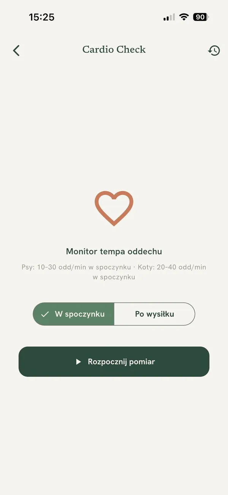
Premium
Raport dla weterynarzaVet report
Wybierasz okres i to, co ma się znaleźć w środku. Drukujesz go albo pokazujesz weterynarzowi na wizycie.Pick the period and what goes inside. Print it or show it to your vet at the visit.
Też w środku:Also inside:Panele chorób przewlekłych (CKD, cukrzyca, tarczyca, FLUTD, serce)Chronic condition dashboards (CKD, diabetes, thyroid, FLUTD, heart)Podpowiedzi szczepień (WSAVA)Vaccine suggestions (WSAVA)Udostępnianie rodzinie i weterynarzowiSharing with family & your vetKarta opiekunaPet sitter cardSOS: telefon do dyżurnego weterynarza i pierwsza pomocSOS: one tap to your emergency vet, plus first aidWydatki na pupilaPet expensesPielęgnacja: zęby, pazury, kąpiel, czesanieGrooming: teeth, claws, baths, brushingUbezpieczenie pupilaPet insurance
Co piszą opiekunowieWhat owners say
★★★★★5,0Google Play · 6 opiniiGoogle Play · 6 reviews★★★★★4,9App Store · 8 ocenApp Store · 8 ratings
★★★★★
Aplikacja znacznie ułatwiła mi codzienną opiekę nad pupilem. Posiada wiele przydatnych funkcji, które pozwoliły mi przechowywać wszystkie najważniejsze informacje dotyczące wizyt u weterynarza, prowadzonej diety oraz wydatków powiązanych ze zwierzęciem. Całym sercem, szczerze polecam!
The app has made everyday care of my pet much easier. It has lots of useful features that let me keep all the key information about vet visits, the diet and pet-related expenses. Wholeheartedly recommended!
Jakumpf · App Store · translated from Polish★★★★★
super aplikacja, łatwa w obsłudze, przydatna przy opiece nad pupilem :)
great app, easy to use, handy for looking after a pet :)
Krystian D. · Google Play · translated from Polish★★★★★
Korzystam i jestem zadowolony z aplikacji, ma wszystko czego potrzebuje do utrzymania pupila
I use it and I'm happy with the app, it has everything I need to look after a pet
Miniu667 · App Store · translated from Polish★★★★★
używam codziennie, bardzo pomocna
I use it every day, very helpful
kamael1100 · Google Play · translated from Polish
Opinie cytowane dosłownie ze sklepów. Stan z 11.10.2026.Reviews quoted from the stores. As of 11 Oct 2026.
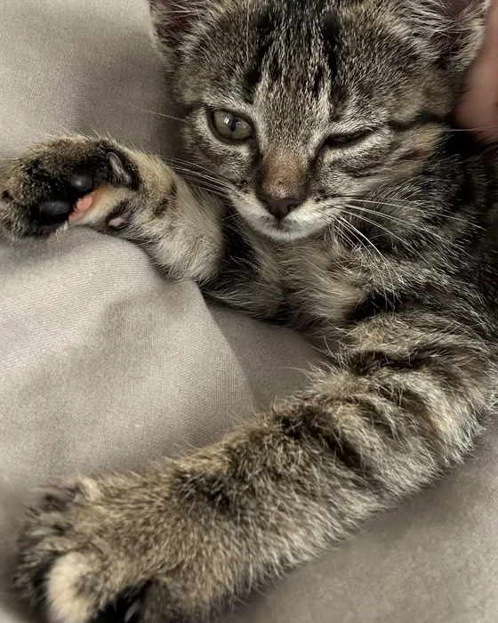
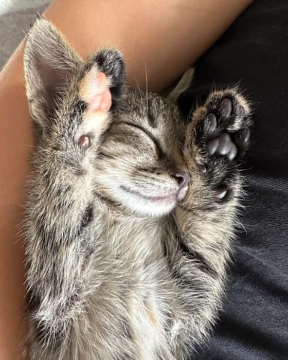
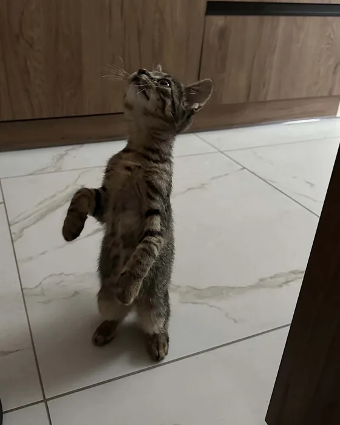
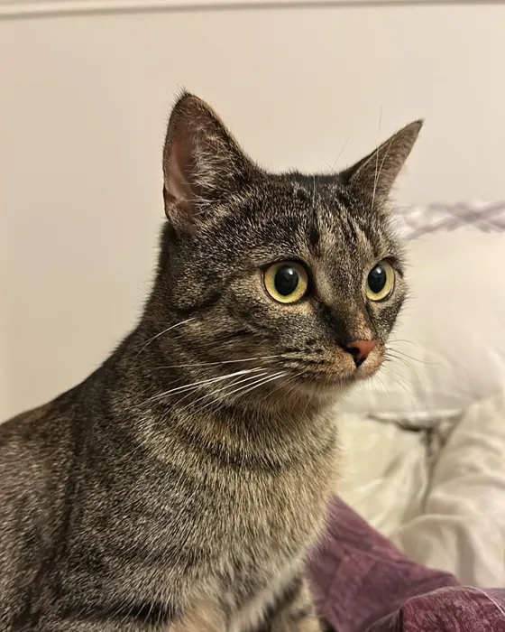
Czesia, pierwsza użytkowniczkaCzesia, the very first user
Dlaczego powstała ApkaŁapkaWhy ApkaŁapka exists
ApkaŁapkę zrobiłem dla Czesi. Chciałem mieć wszystko pod ręką i wiedzieć, co, ile i kiedy. Teraz wiem, kiedy skończy się karma i żwirek, a na wizycie mam gotowe odpowiedzi dla weterynarza. Bez stresu i bez szukania dokumentów, paragonów, zdjęć i karteczek. Notatki i kalendarz w telefonie tego nie ogarniały, więc napisałem aplikację, której sam potrzebowałem.
I built ApkaŁapka for Czesia, my cat. I wanted everything at hand and to know what, how much and when. Now I know when the food and litter will run out, and at the vet I have the answers ready. No stress, no digging for documents, receipts, photos and sticky notes. Phone notes and calendar couldn't keep up, so I wrote the app I needed myself.
Dziś korzystają z niej opiekunowie psów i kotów. Czytam każdą wiadomość, a ich uwagi pomagają mi ulepszać kolejne wersje. Czegoś Ci brakuje? Napisz do mnie: apkalapka.support@gmail.com
Today dog and cat owners use it too. I read every message, and their feedback helps me make each version better. Missing something? Write to me: apkalapka.support@gmail.com
Mateusz, twórca ApkaŁapkiMateusz, maker of ApkaŁapka
Zacznij za darmo, rozszerz gdy zechceszStart free, upgrade when you want
7 dni pełnego dostępu do Premium za darmo. Nie musisz nic robić, żeby korzystać dalej, a jeśli to nie dla Ciebie, anulujesz przed końcem 7 dnia i nic nie płacisz.7 days of full access to Premium, free. You don't have to do anything to keep using it, and if it's not for you, cancel before day 7 ends and pay nothing.
Free
Wszystko, czego potrzeba na startEverything you need to start
Profile pupili i dziennik opiekiPet profiles and care journal
Udostępnianie pupila rodzinie i opiekunomPet sharing with family and sitters
Wiele pupili i raport dla weterynarzaMultiple pets and vet report
Bez reklamNo ads
Plan miesięczny, roczny lub dożywotni. Aktualne ceny znajdziesz w Google Play i App Store.Monthly, yearly or lifetime plan. You'll find current prices in Google Play and the App Store.
Najczęstsze pytaniaFrequently asked questions
Jak anulować subskrypcję?How do I cancel my subscription?
Subskrypcją zarządzasz w sklepie, w którym ją kupiłeś: Google Play (Subskrypcje) lub App Store (Apple ID, Subskrypcje). Anulujesz w każdej chwili, dostęp trwa do końca opłaconego okresu.You manage your subscription in the store where you bought it: Google Play (Subscriptions) or the App Store (Apple ID, Subscriptions). Cancel anytime, access lasts until the end of the paid period.
Czym jest 7 dni Premium za darmo?What is the 7-day free Premium?
To bezpłatny okres próbny pełnego dostępu do Premium, uruchamiany jako subskrypcja w Google Play albo App Store. Nie musisz nic robić, żeby korzystać dalej: po 7 dniach subskrypcja po prostu odnawia się automatycznie i sklep pobiera opłatę. Jeśli to nie dla Ciebie, anulujesz przed końcem 7 dnia i nic nie płacisz, a dostęp trwa do końca okresu próbnego.It's a free trial of full access to Premium, started as a subscription in Google Play or the App Store. You don't have to do anything to keep using it: after 7 days the subscription simply renews automatically and the store charges you. If it's not for you, cancel before day 7 ends and pay nothing, with access lasting until the trial is over.
Czy moje dane są bezpieczne?Is my data safe?
Tak. Dane na urządzeniu są szyfrowane, aplikacja jest zgodna z RODO, a ApkaŁapka nie sprzedaje Twoich danych. Synchronizacja w chmurze jest opcjonalna.Yes. On-device data is encrypted, the app is GDPR compliant, and ApkaŁapka does not sell your data. Cloud sync is optional.
Czy aplikacja działa bez internetu?Does the app work offline?
Tak. ApkaŁapka działa offline, a dane domyślnie zostają na Twoim telefonie. Konto i synchronizacja nie są wymagane do podstawowego użycia.Yes. ApkaŁapka works offline and your data stays on your phone by default. An account and sync are not required for basic use.
Czy mogę wyeksportować lub usunąć dane?Can I export or delete my data?
Tak. Dane wyeksportujesz do pliku, a konto wraz z danymi możesz w całości usunąć, zgodnie z RODO.Yes. You can export your data to a file and fully delete your account and data, in line with GDPR.
Nie dostaję przypomnień, jak to naprawić?I'm not getting reminders, how do I fix it?
Sprawdź, czy powiadomienia dla ApkaŁapka są włączone w ustawieniach telefonu, a na Androidzie wyłącz optymalizację baterii dla aplikacji.Check that notifications for ApkaŁapka are enabled in your phone settings, and on Android disable battery optimization for the app.
ApkaŁapka to organizer opieki nad zwierzęciem, nie urządzenie medyczne. W sprawach zdrowia pupila zawsze skonsultuj się z weterynarzem.ApkaŁapka is a pet care organizer, not a medical device. Always consult your veterinarian about your pet's health.